The Chair’s Manual
Run your committee from the first sign-in to the last battle: forces, morale, the battle map, combat, the rules and a playbook for the room.
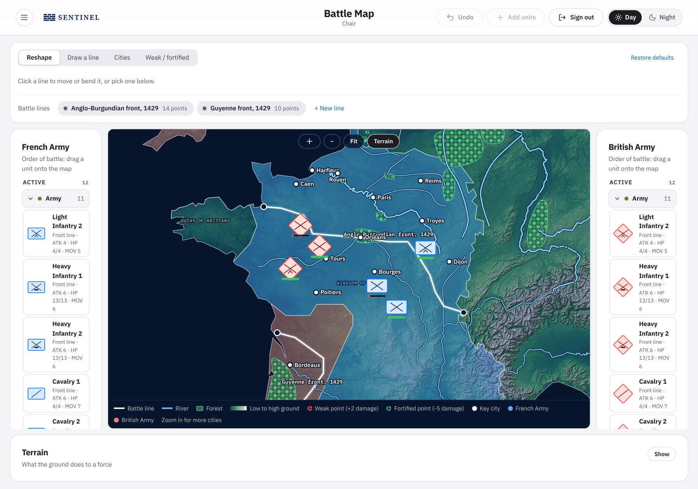
Contents
Introduction
About this manual3Welcome
SENTINEL at a glance4Three roles, three levels of access5What a chair does6Before you begin7A session in one view8Getting started
Signing in9When sign-in goes wrong10Choosing a topic11Your workspace12The sidebar13The top bar14Overview
The Forces overview15Strength over time and by class16The four tiles17Sub classes and readiness18Activity, balance and battle record19Battle Map · continued
Drawing and restoring lines33Cities, and keeping the map in sync34Weak and fortified points35What the points do in a battle36Combat Calculator
The Combat Calculator37Choosing the units38Conditions for this engagement39Reading the result40Show the working41Applying the result42Rules & Formulas
Rules & Formulas43Strength penalty, modifier and results chart44The damage formula45Spread, directives, sub classes and classes46About this manual
Everything a chair needs to run a Historical Joint Crisis Committee on SENTINEL, in the order you will meet it.
SENTINEL is the web platform that holds your committee’s forces, map, morale and combat rules. Delegates keep their own forces. You, the chair, see both sides, decide the outcomes and keep the board honest. This manual covers every screen a chair can open and every control on it.
New to SENTINEL?
Read Welcome and Getting started (pages 4–14), then follow the one-page session plan on page 8.
Setting up rules?
The Rules & Formulas chapter starts on page 43.
How to read it
Names of buttons, tabs and pages are in bold, exactly as they appear on screen: Order of Battle, Apply result to both sides. Keys look like Ctrl Z. On a Mac, use ⌘ where the manual says Ctrl.
Screenshots come from Topic 1, The Hundred Years’ War, with sample forces. Your numbers and unit names will differ. Side names change by topic and are given in full on page 4.
Quick find
| I want to… | Go to |
|---|---|
| Sign in or fix a sign-in problem | page 9 · page 10 |
| See how strong each side is | page 15 |
| Change a side’s morale | page 25 |
| Place troops and draw battle lines | page 29 · page 32 |
| Work out and apply a battle | page 37 |
| Change how damage is calculated | page 43 |
| Move a character to another side | page 47 |
| Mark ground where troops are exposed or dug in | page 35 · page 36 |
| Run a session, rule a battle, handle a defection | page 49 · page 50 · page 51 |
| See every key, limit and formula on one page | page 58 |
Describes SENTINEL as of November 2026. If a screen looks different, the platform has been updated; the ideas stay the same.
SENTINEL at a glance
One live board for the whole committee: two sides, one map, one set of rules that you control.
SENTINEL replaces spreadsheets and paper trackers in a Historical Joint Crisis Committee (HJCC). Each delegate plays a character and records their own forces. You see everything, set morale, move the lines on the map and run the combat. Every change you make is logged, and most can be undone.
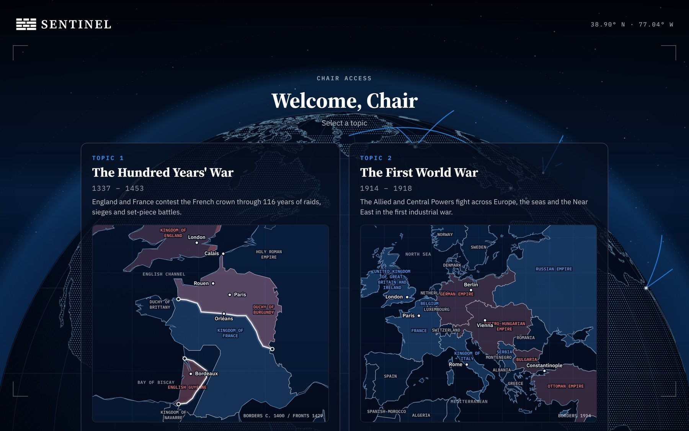
The two topics
| Topic 1 | Topic 2 | |
|---|---|---|
| Conflict | The Hundred Years’ War, 1337–1453 | The First World War, 1914–1918 |
| Side names in the tracker | French Army · British Army | Allied Powers · Central Powers |
| Side names on Sides by day | French royals · English royals · Neutral | Allied powers · Central powers · Neutral |
| Classes of force | Army, Navy | Army, Navy, Airforce, Marine |
| Starting battle lines | Two (Anglo-Burgundian and Guyenne fronts, 1429) | None: you draw them |
| Characters | 20 | 20 |
The big ideas
Delegates report
Each delegate adds and updates their own units. You see those units, read-only, the moment they change.
Chairs decide
You set morale, run combat, apply results and keep the map. The calculator only estimates; you confirm.
Everything is logged
Moves, HP changes, morale and battles go into an activity log, and Undo steps back through them.
Three roles, three levels of access
What you can change depends on how you signed in. Chairs see the whole board and own the outcomes.
Every account has one access level. The sign-in screen offers all three; an account only works at its own level.
| Delegate | Chair (you) | Administrator | |
|---|---|---|---|
| See their own side’s forces | ● | – | – |
| See both sides and the whole board | – | ● | – |
| Add, edit and move units | ● | – | – |
| Set each side’s morale | – | ● | – |
| Use the combat calculator and apply results | – | ● | – |
| Place troops, draw battle lines, mark weak and fortified ground, give cities to a side | – | ● | – |
| Edit rules, formulas, classes and sub classes | – | ● | ● |
| Move characters between sides each day | – | ● | ● |
| Create accounts, reset passwords, assign characters | – | – | ● |
| See who is online and how the server is doing | – | – | ● |
Delegate
Menu: Overview, My Forces, Order of Battle, Battle Overview, Battle Map. Sees only their own side’s morale.
Chair
Menu: Overview, Order of Battle, Morale, Battle Map, Combat Calculator, Sides by day, Rules & Formulas.
Administrator
Menu: System status, Control Panel, Sides by day, Rules & Formulas. Does not command a side.
What a chair does
A chair is neutral, like the chair of a United Nations committee: the rules and the record are yours; the sides belong to the delegates.
SENTINEL reflects this on screen. For you, the two sides carry the names of the topic (French Army and British Army), never “My Force” and “Enemy Force” as delegates see them.
Your six jobs
1 · Watch the whole board
The Overview and Order of Battle pages show both sides’ strength, readiness and every unit. Delegates report; you verify.
Pages 15–24
2 · Set morale
One figure per side, 0–100. It scales damage in combat and each delegate sees only their own side’s figure.
Pages 25–26
3 · Keep the map
Place troops, move them as orders are given, shape battle lines, give cities to a side and mark weak and fortified ground. Everyone sees your changes.
Pages 27–36
4 · Resolve combat
Tick attackers and defenders, read the estimate and the working, and press Apply once you have ruled.
Pages 37–42
5 · Own the rules
Switch rules on or off, edit the damage formula, results chart and unit stats, and add standing directives per side. Rules are shared with every screen.
Pages 43–46
6 · Assign sides by day
Characters can change sides as the crisis unfolds. Move them day by day; delegates see their own side change straight away.
Pages 47–48
What stays with delegates and the administrator
| Task | Who does it |
|---|---|
| Adding, editing, moving or deleting units; changing a unit’s HP | The delegate who owns the unit |
| Creating accounts, resetting passwords, assigning a character to a delegate | The administrator |
| Wiping forces, battle lines and sides for everyone (Reset for everyone) | The administrator |
Before you begin
A short list of what you need so the first session starts without a hitch.
What you need
An account at chair level
Your administrator creates it and gives you a username and password. Passwords are at least 10 characters, and common ones are refused. One account per person: sign-in attempts are rate-limited, and the administrator can see who is online.
A current web browser
A recent version of Chrome, Edge, Safari or Firefox on a laptop or desktop works best. The board and the map are designed for a screen at least 1280 pixels wide. Tablets work too: press and hold a card, then drag.
An internet connection
Sign-in, morale, sides by day, the map, troops and delegates’ forces are all kept on the server, so SENTINEL needs a connection while you work.
Browser storage switched on
Your activity log, battle record, strength history, sub class stats and display preferences are kept in this browser. If storage is blocked or full, the page shows “Not saved: browser storage is blocked or full.” (Rules, morale, sides and the map are kept on the server.)
Before the first session
- Confirm with the administrator that every delegate has an account and a character for the topic you will run.
- Sign in once and open every page in your menu so you know where things are (page 13). Skim the playbook (page 49) before your first live session.
- Review Rules & Formulas. The defaults are placeholders until your committee’s booklet says otherwise (page 43).
- Agree with your co-chairs who edits the rules and the battle lines. Rules are shared, and lines are saved as a whole list, so two people editing at once can undo each other (page 55).
- Decide who starts on which side on Day 1, and adjust Sides by day if needed (page 47).
- Choose Day or Night mode. Night mode is easier on the eyes in a dim committee room (page 14).
A session in one view
The same loop, every day of the committee. Each step has a chapter in this manual.
page 9
page 11
page 15
page 25
page 37
page 27
page 47
page 43
page 48
A typical turn, minute by minute
- Read the roomOpen Overview. Check each side’s strength, what is in reserve and any new losses since you last looked.
- Hear the ordersDelegates tell you what they want to do. Place or move their troops on the Battle Map as you rule.
- Settle contactWhere forces meet, open the Combat Calculator, tick the units, adjust conditions, and read the working. Rule, then Apply.
- Tell the committeeDelegates keep their own running records. After you apply a result, tell them the outcome so their figures match.
- Close the turnNudge morale if events call for it. At the end of a day, Add day on Sides by day and move any characters who changed sides.
Signing in
SENTINEL checks your password on the server. Choose the right access level first, then enter your login.
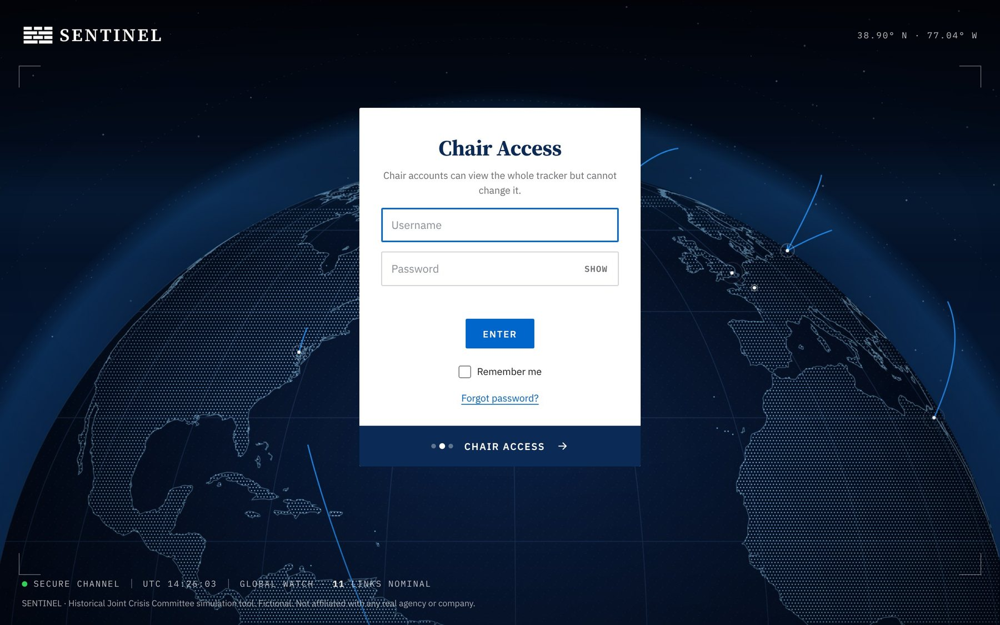
1234- Open the site and look at the strip at the bottom of the cardIt shows Delegate access, Chair access or Administrator, with three dots. Press it to move to the next level: Delegate → Chair → Admin → Delegate. Stop on Chair access. The card title changes to Chair Access (1).
- Enter your usernameUsernames use 2–32 letters, numbers, dots, dashes or underscores, and are not case-sensitive (2).
- Enter your passwordPress Show to reveal it and Hide to cover it again (3). Nothing is remembered about your password.
- Press EnterPress the blue Enter button or the Return key (4). The button reads Checking… while the server verifies you.
Remember me
Tick Remember me to keep your username on this device, so next time the cursor starts in the password box. The password is never stored.
Access granted
A short Access granted sequence plays, then you land on the topic picker. If your device is set to reduce motion, SENTINEL skips the animation and goes straight in.
Signing out. Press Sign out in the top bar of any page (or on the topic picker). Close shared computers this way: your session lives in the browser tab and also ends when you close it.
When sign-in goes wrong
Every message tells you what to do next. These are the ones you may see.
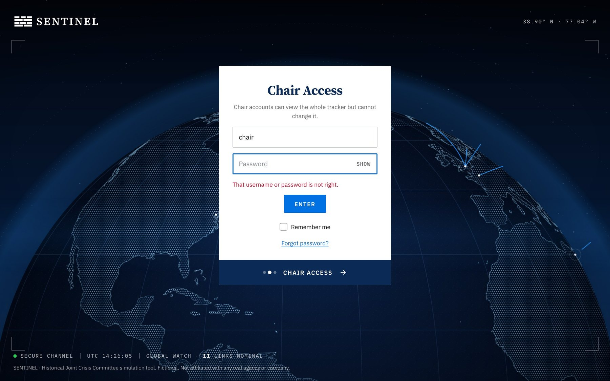
1| Message | What it means | What to do |
|---|---|---|
| That username or password is not right. | Wrong username or password. Nothing else is revealed. | Check Caps Lock, press Show to read what you typed, and try again. |
| This account does not have chair access. Switch the access level below. | The login is right, but the strip is set to the wrong level (for example Delegate). | Press the strip at the bottom of the card until it reads Chair access. |
| Too many attempts. Try again in N minutes. | Sign-in is temporarily locked for safety. | Wait the time shown. See the limits below. |
| Cannot reach the sign-in service. Try again. | Your device could not reach SENTINEL. | Check your internet connection and reload. |
Lock-out limits
Limits exist to stop password guessing. A whole room often shares one wifi address, so they are generous. Each lasts 15 minutes.
40 wrong passwords
from one address (all accounts together) locks sign-in for that address.
10 wrong passwords
against one account from one address locks sign-in for that address.
60 wrong passwords
against one account from all addresses combined locks that account.
Forgotten password
Press Forgot password? under the form. It reminds you to ask your committee administrator to reset your account. Only the administrator can do this; there is no self-service reset.
Choosing a topic
After signing in you pick which of the committee’s two topics to run. Each has its own forces, rules and map.
- Read the two cardsTopic 1 is The Hundred Years’ War (1337–1453). Topic 2 is The First World War (1914–1918). Each card previews its map and battle lines.
- Press Enter topicSENTINEL opens the dashboard on the Overview page for that topic, with a short transition.
- Change topic any timePress Change topic at the top of the sidebar. Your work in the other topic is kept exactly as you left it.
What belongs to a topic
- Delegates’ forces and the Order of Battle
- Morale for each side
- The rules and formulas
- Troops on the map, battle lines and city sides
- Sides by day
What does not
- Your account and password
- Your Day / Night choice
- Which panels you collapsed
These stay the same in both topics.
Your workspace
Every page shares the same frame: a menu on the left, a bar across the top and the page itself in the middle.
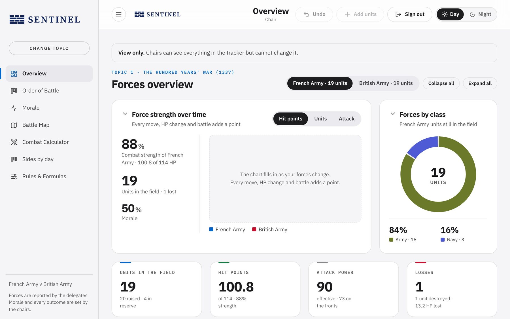
12345678- 1Menu button. Opens and closes the sidebar.
- 2Page title and role. You are signed in as Chair.
- 3Actions. Undo, Add units (greyed for chairs) and Sign out.
- 4Day / Night. Switches the colour theme.
- 5Sidebar. Change topic, then the seven pages a chair uses.
- 6View-only note. Appears on pages where units cannot be changed.
- 7Page controls. Switch side, collapse panels and more.
- 8Panels. Each can be folded to show a one-line summary.
Three things worth knowing
The menu folds
The sidebar folds away after you open a page to give the content room. Press ☰ to bring it back; Esc closes it.
Pages remember
Collapsed panels, the side you were viewing and Day / Night are remembered on this device.
Pages update
Morale, rules, the map and the delegates’ forces refresh by themselves: morale and rules every 15 seconds, the map as it changes.
The sidebar
Seven pages, one topic switch. This is your whole menu.
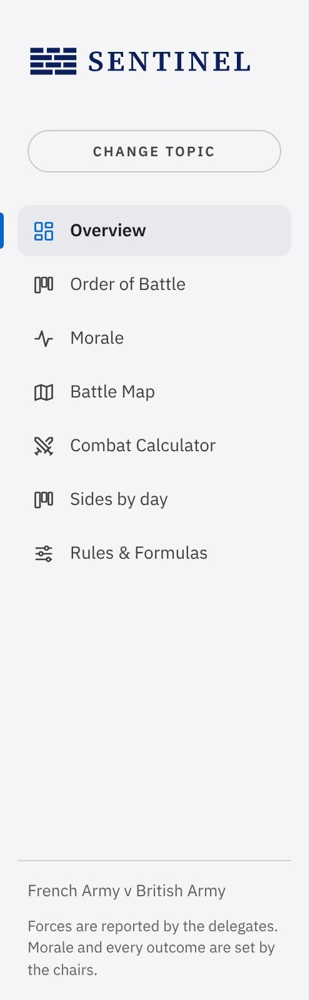
| Page | What you do there |
|---|---|
| Overview p. 15 | Charts and totals for each side: strength over time, classes, readiness, activity, battles. |
| Order of Battle p. 20 | Every unit on both sides on one board. Search, filter, and drop units into the battle tray. |
| Morale p. 25 | Set each side’s morale from 0 to 100. |
| Battle Map p. 27 | Place troops, reshape battle lines, give cities to a side. |
| Combat Calculator p. 37 | Pick attackers and defenders, read the estimate, then apply the result. |
| Sides by day p. 47 | Move characters between the two sides and Neutral for each day. |
| Rules & Formulas p. 43 | Control how damage is worked out. |
Change topic
The pill at the top returns you to the topic picker (page 11). Your current page is lost on the way, but nothing is deleted.
Count badges
The Combat Calculator shows a small number: how many units are currently ticked for the engagement you are setting up.
The top bar
Undo, sign out and the Day / Night switch are always one press away.
| Control | What it does |
|---|---|
| ☰ Menu | Opens and closes the sidebar. |
| Page name and role | The page you are on, with Chair under it. If your username differs from your role it follows, as Chair · yourname. |
| Undo | Reverses your last change on this device: an applied battle, a rule change, a morale change. It is greyed out when there is nothing to undo. Shortcut: Ctrl Z (⌘ Z on a Mac). |
| Add units | Always greyed out for chairs. Delegates add units; you review them. |
| Sign out | Ends your session and returns to the sign-in screen. |
| Day / Night | Switches the whole interface between a light and a dark theme. The choice is remembered on this device. |
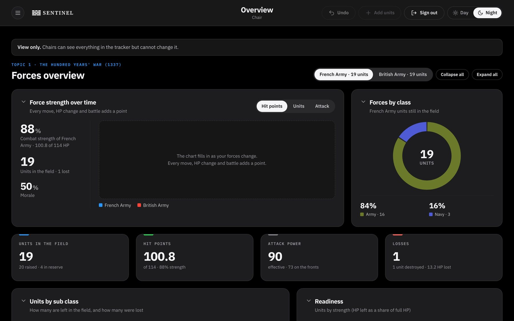
Keyboard
| Keys | Action |
|---|---|
| Ctrl Z | Undo |
| Esc | Close a pop-up, a unit drawer, a menu or the sidebar; stop placing a troop |
| Enter | Save a pop-up form; apply an edited formula |
| Space / Enter | Press a focused panel header or button |
The Forces overview
Your first stop each turn. How strong is each side, how is it changing, and what happened since you last looked?
- 1Side switch. Choose which side the page shows.
- 2Collapse all / Expand all. Fold every panel to its one-line summary, or open them all.
- 3Strength over time. Combat strength, units and morale, with a chart (page 16).
- 4Forces by class. A donut of units still in the field.
- 5Four tiles. Units, hit points, attack power, losses (page 17).
One side at a time
The Overview shows one side at once. The switch at the top right reads, for example, French Army · 19 units and British Army · 19 units: the unit count is the number still in the field. Press the other side to flip the whole page.
Everything folds
Press any panel title to collapse it. While folded, its subtitle becomes a one-line summary (for example “18 at full strength · 1 below 50% · 1 destroyed”), so you can skim the page without losing detail. Your choice is remembered on this device.
Strength over time and by class
A running picture of how much fight each side has left, drawn from every change you and the delegates make.
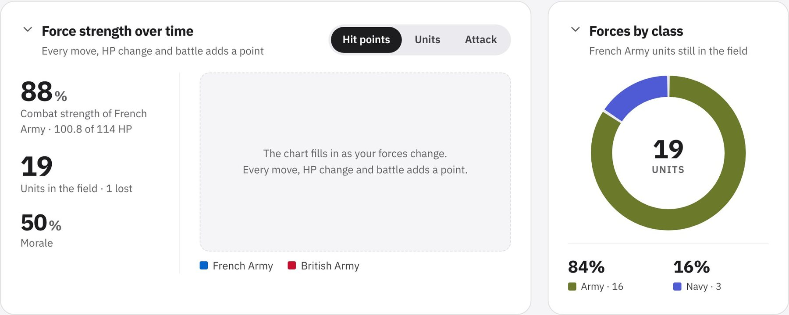
Force strength over time
The left side of the panel gives three headline numbers for the selected side:
| Number | What it means |
|---|---|
| 88% Combat strength | Hit points left across units in the field, as a share of their full hit points. Example: 100.8 of 114 HP is 88%. |
| 19 Units in the field | Units that are not destroyed, plus how many have been lost (· 1 lost). |
| 50% Morale | The side’s current morale. It only appears while Morale is switched on in the rules (page 25). |
The chart on the right draws a line per side. Use the switch above it to plot Hit points, Units or Attack. Every move, HP change and battle adds a point, so a busy turn bends the line. Until the first change the chart shows “The chart fills in as your forces change.”
Forces by class
The donut shows the side’s units still in the field by class: Army, Navy and, in Topic 2, Airforce and Marine. Percentages and counts sit underneath. Class colours are set on the Rules page (page 46) and reused on every card and chart.
The four tiles
Totals for the selected side, each with a small trend line.
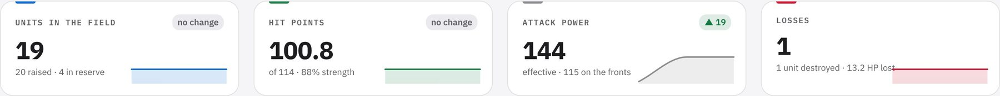
| Tile | Big number | Small print |
|---|---|---|
| Units in the field | Units that are alive and in play. | 20 raised · 4 in reserve: units ever added, and how many sit in Reserve rather than on the front. |
| Hit points | Total HP left across units in the field. | of 114 · 88% strength: the total at full strength, and the percentage left. |
| Attack power | Effective attack: ATK after the strength rules and any directives for that side. | 115 on the fronts: the part of it that sits on a front, not in Reserve. |
| Losses | Units destroyed so far. | 13.2 HP lost: hit points lost across the whole side, destroyed units included. |
The change badge
A grey no change pill, or a green ▲ or ▼ with a number, compares today with the first recorded point, like a market index. Green means it moved the way a commander would want: more units, more HP, more attack. A change in the wrong direction shows red. Hover to see Since tracking started.
The sparkline
The mini chart in each tile shows the last 40 recorded points. For Losses it is the HP lost over time, so a rising line means a side is bleeding.
Why attack power can exceed raw ATK
The tile uses effective attack. With Combat modifier or a side directive switched on (page 44, page 46), a unit’s effective ATK can be higher than the ATK printed on its card. Here the modifier gives +2 and the French directive +1.
Chairs see both sides
Delegates only see their own side’s tiles. You can flip between sides, so you can spot a side that is quietly losing before its delegate raises it.
Sub classes and readiness
Which kinds of unit are left, and how healthy they are.
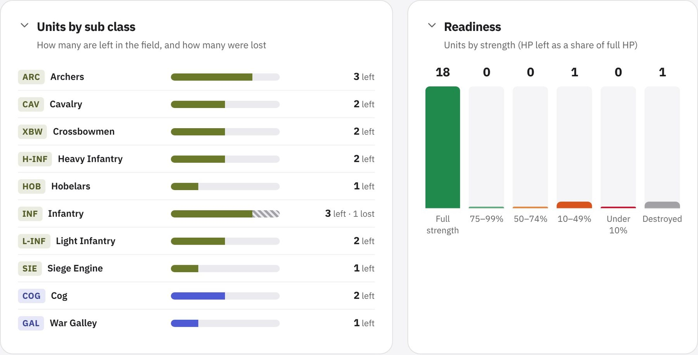
Units by sub class
One row per sub class (Archers, Cavalry, Infantry and so on) with its code chip, a bar and the count: 3 left · 1 lost. The coloured part of the bar is units still in play; the striped part is units lost. Row colour follows the class (Army olive, Navy indigo).
Readiness
Readiness sorts every unit by strength: its HP left as a share of its full HP. Six bars give the counts:
| Bar | Strength | Reading |
|---|---|---|
| Full strength | 100% | Untouched. |
| 75–99% | 75% to just under 100% | Light damage. |
| 50–74% | 50% to 74% | Fair. Starts to feel the losses. |
| 10–49% | 10% to 49% | Weak. Likely to be penalised in combat (page 44). |
| Under 10% | Under 10% | Critical. With the default strength penalty, too weak to attack. |
| Destroyed | 0 HP | Counted as lost. |
Activity, balance and battle record
What has happened, who is ahead where, and which engagements you have already ruled on.
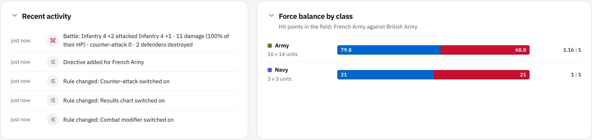
Recent activity
The eight latest entries in the activity log, newest first, with a relative time and an icon for the type: moves, HP changes, battles, rule changes and morale. Examples: “Morale (French Army): 50% → 60%”, “Rule changed: Counter-attack switched on”, “Battle: Infantry 4 attacked Infantry 4 · 11 damage (100% of their HP) · 2 defenders destroyed”.
Force balance by class
For each class a bar compares the two sides’ hit points in the field: blue for the first side, red for the second. The number on the right is the ratio, such as 1.16 : 1. The line under the class name shows unit counts, 16 v 14 units. If only one side has units in a class it reads no British Army or the like.
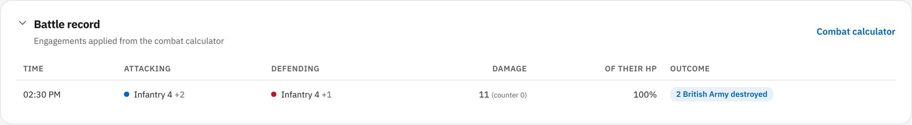
Battle record
A table of the last eight applied battles with time, attackers, defenders, damage (and counter-attack damage in brackets), the percentage of the defenders’ HP and an outcome pill. The full record, up to 300 battles, is on the Combat Calculator (page 42). Combat calculator in the panel header jumps there.
Night mode and printing
Collapsed panels stay collapsed in a screenshot, so fold what you do not want to show before projecting the page.
The log is local
The activity log lives in this browser, per sign-in. A co-chair on another device keeps their own. See page 55.
The Order of Battle board
Every unit on both sides, laid out like a staff map: Reserve at the edges, the Front line at the centre.
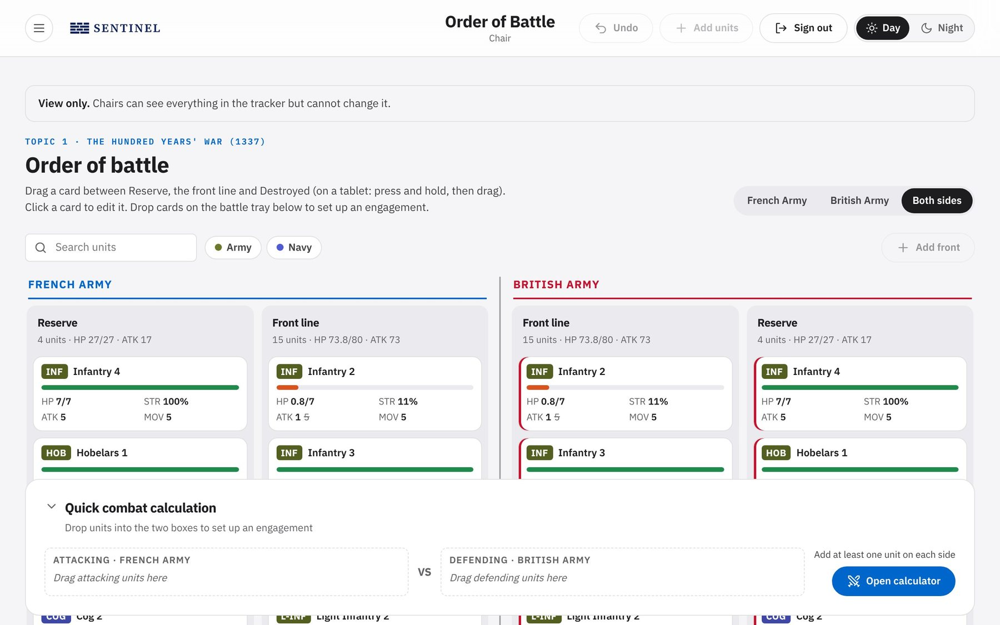
12345- 1Side switch. French Army · British Army · Both sides. Chairs open on Both sides.
- 2Search and class chips. Narrow what the board shows (page 22).
- 3Reserve. Units raised but not yet deployed.
- 4Front line. Units in play. Each column totals its units, HP and ATK.
- 5Battle tray. Set up an engagement without leaving the page (page 24).
How the board is laid out
With Both sides selected the board splits down the middle by a thin line. Each half has its side’s name in colour (blue, then red). Reserve sits on the outer edge and the Front line next to the dividing line, so the two front lines face each other. Under each column title is a summary: 15 units · HP 73.8/80 · ATK 73.
Selecting one side shows a single board for it, with every column in order. A third panel, Destroyed, collects units at 0 HP from both sides; it folds like any other panel.
Reading a unit card
Everything you need to know about a unit fits on one small card.
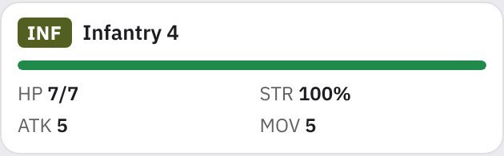
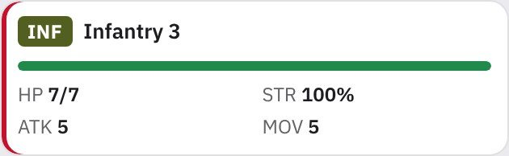
| Part | Meaning |
|---|---|
| Code chip | A short code for the unit’s sub class: INF infantry, HOB hobelars, COG cog, ART artillery and so on. The chip takes its class colour (Army olive, Navy indigo, Airforce teal, Marine orange). |
| Name | The name the delegate gave it, such as Infantry 4. |
| HP bar | HP left as a share of full HP, coloured by readiness tier: green when healthy, shading through amber and orange to red (page 18). |
| HP 7/7 | Hit points now, over the unit’s full hit points. |
| STR 100% | Strength: the same share as the bar. A destroyed unit shows a dash. |
| ATK 5 | Attack. When a rule changes it, the new value is bold and the card’s printed value is struck through, for example ATK 1 |
| MOV 5 | Movement: how far the unit can travel in a turn. On the map, 1 MOV is about 30 km on open ground (page 30). |
The buttons on a card
Delegates see −1, +1 and a sword button. For chairs the HP buttons are greyed out: HP is the delegate’s record. The sword button adds the unit to the battle tray (page 24). Click anywhere else on a card to open its details (page 23).
Search, filters and neutral units
On a busy board you will want just one kind of unit, or one name.
- SearchType in Search units. The board filters live by unit name, sub class name and code. Typing
cogorCOGfinds Cogs. - Filter by classPress a class chip (Army, Navy, and in Topic 2 Airforce and Marine) to show that class only. Press it again to clear the filter.
- Pick a sideUse the switch above the toolbar to look at the French Army only, the British Army only, or both.
Neutral parties
Some characters begin the committee without a side. Their units are neutral: they are not part of either army and are not in the Overview totals. When any exist, a Neutral parties panel appears on the board with a note, “they pick a side later”. Once you move that character onto a side in Sides by day (page 47), their units join that side’s columns the next time the page refreshes.
Where do the units come from?
Chairs do not add units. Each delegate adds theirs on their own My Forces page, and SENTINEL copies them to the server a moment after every change. Your board is rebuilt from those copies. If a delegate’s units are missing:
- They may not have added any yet.
- They may be signed in on a new browser that has not sent anything (an empty list from a brand-new device is deliberately not sent, so it cannot wipe what you see).
- Their character may not be on a side today (page 48).
Opening a unit
Click a card for the full record. As a chair you can read everything, and send the unit to the calculator.
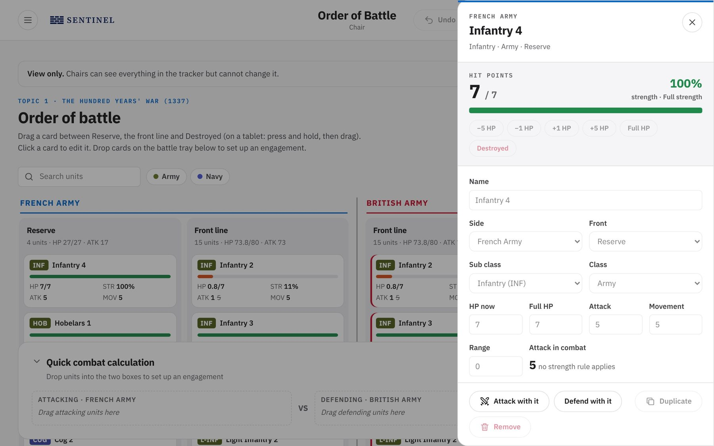
1234- 1Heading. Side, name, sub class, class and where it stands. Press ✕ or Esc to close.
- 2Hit points. HP over full HP, strength percentage and tier, with the bar.
- 3The record. Name, side, front, sub class, class, HP, attack, movement and range, plus Attack in combat: ATK after the rules.
- 4Attack with it / Defend with it. Put the unit in the calculator.
What you can do in the drawer
| Control | Chair |
|---|---|
| Edit name, side, front, sub class, stats | Greyed out |
| −5, −1, +1, +5 HP, Full HP, Destroyed | Greyed out |
| Duplicate, Remove | Greyed out |
| Attack with it, Defend with it | Available: adds the unit to the attack or defence side of the battle tray |
Attack in combat is worth reading before you rule: it is the number the calculator will use, after the strength rules and any side directive. “no strength rule applies” appears when none changes it.
The quick combat calculation tray
Set up an engagement straight from the board, then open the calculator with the units already ticked.
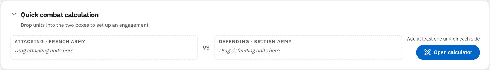
- Drag attackers into the left boxDrag a card into Attacking, or press the sword button on the card, or use Attack with it in the drawer. On a tablet, press and hold a card, then drag.
- Drag defenders into the right boxThe right box takes the opposite side. If you drop a British unit as the attacker, the tray flips so the British attack and the French defend.
- Read the estimateOnce each box has a unit the tray shows Estimated damage and the percentage of the defenders’ HP.
- Open the calculatorPress Open calculator. The units are already ticked (page 38).
Remove a unit
Press the ✕ on its chip. Destroyed units cannot be added: SENTINEL says so in a message instead.
The same engagement everywhere
The tray, the calculator and the Battle Map’s Open in calculator button share one engagement. Set it up anywhere and finish anywhere.
Setting morale
One figure per side, from 0 to 100. You set it; it changes the damage the attacker deals.
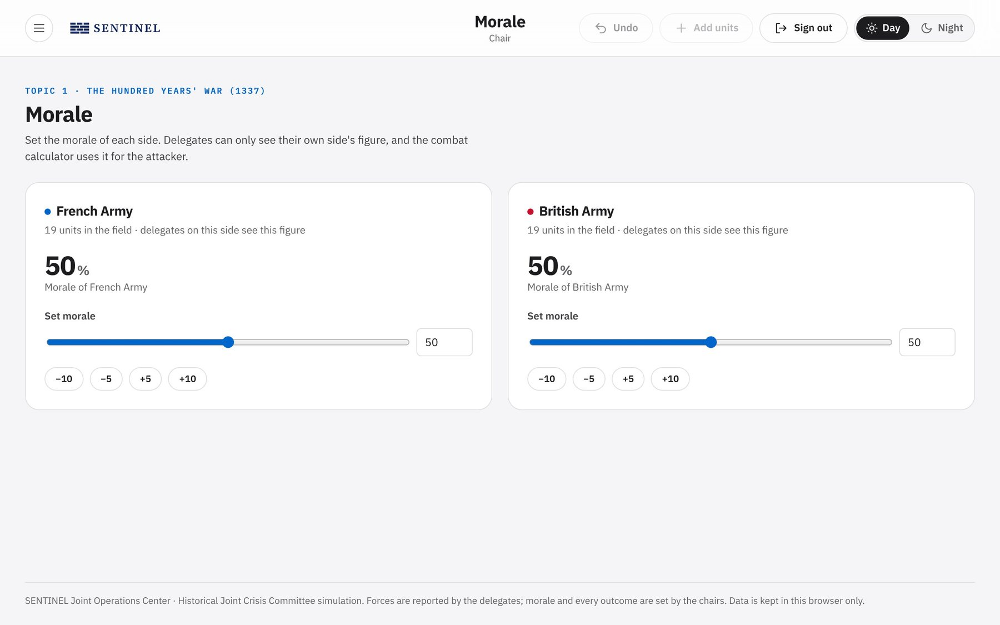
123- 1Readout. The side’s current morale, with the number of units in the field.
- 2Set morale. Drag the slider, or type a number. Both stay in step.
- 3Quick steps. −10, −5, +5 and +10 move it by that amount.
- Open MoraleChoose Morale in the sidebar. Both sides appear side by side, named for the topic (for example French Army, British Army).
- Change the figureDrag the slider, type a value (whole numbers, 0–100) or press a quick step. Values outside the range are clamped: typing 140 gives 100.
- That is allThere is no Save button. The new figure is written to the server immediately and added to the activity log, for example Morale (French Army): 50% → 60%.
Everyone starts at 50
Until you change it, both sides stand at 50%, in both topics.
Delegates see only their own
A delegate sees only their own side’s figure. A delegate whose character is on no side today sees no morale at all. Their screens refresh it within 15 seconds.
How morale affects combat
With the standard method, damage is the attackers’ total attack, scaled by their morale.
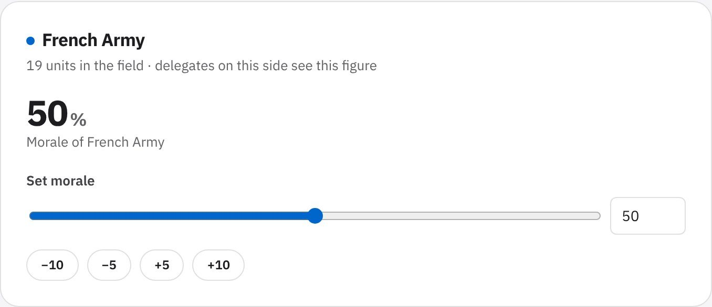
The standard formula
The default damage formula is atk * morale / 100 * mult + bonus. At 50% morale a force with a combined attack of 13 deals 6.5 damage. At 100% it deals 13; at 0% it deals nothing.
| Attacker morale | ATK 13 deals |
|---|---|
| 100% | 13 |
| 75% | 9.75 |
| 50% | 6.5 |
| 25% | 3.25 |
| 0% | 0 |
Whose morale is used
- The attacking side’s morale scales the damage of the hit.
- With Counter-attack on, the defending side’s morale scales the strike back.
- You can override either figure for a single engagement without touching the side’s real morale (page 39).
When to change it
Morale is your lever for what the story does to the troops. SENTINEL never changes it for you. Suggestions only; your committee’s booklet governs:
| Event | A sensible move |
|---|---|
| A decisive victory, a rousing speech, a ruler present at the front | +5 to +10 for the winning side |
| A defeat, a siege lost, a commander killed | −5 to −10 for the losing side |
| Plague, famine, mutiny, unpaid wages | −10 or more, announced to the committee |
| A new alliance or a long rest | +5 |
The Battle Map
The theatre, its terrain, the battle lines and every troop on one shared map. What you change here, everyone sees. Delegates see lines, cities, weak and fortified points and troops on their own Battle Map page, but cannot change them.
- 1Chair bar. Choose one of four tools (Reshape, Draw a line, Cities, Weak / fortified) and manage battle lines.
- 2French Army column. The units to place, and those already on the map.
- 3The map. Terrain, borders, cities, battle lines and troops. Drag to pan, scroll to zoom.
- 4British Army column. The same, for the other side.
- 5Terrain card. What rivers, forest and mountains do to a force (page 31).
What you can do here
| Task | How | Page |
|---|---|---|
| Look around | Pan, zoom, switch terrain on or off | page 28 |
| Put a unit on the map | Drag it from your column, or click it and click the map | page 29 |
| Check a troop and how far it can move | Click its marker | page 30 |
| Move or bend a battle line | Reshape tool | page 32 |
| Add a new battle line | Draw a line tool | page 33 |
| Give a city to a side | Cities tool | page 34 |
| Mark ground where units take extra or less damage | Weak / fortified tool | page 35 |
Placing troops
Units come from the delegates’ order of battle. You put them on the map and move them as the committee rules.
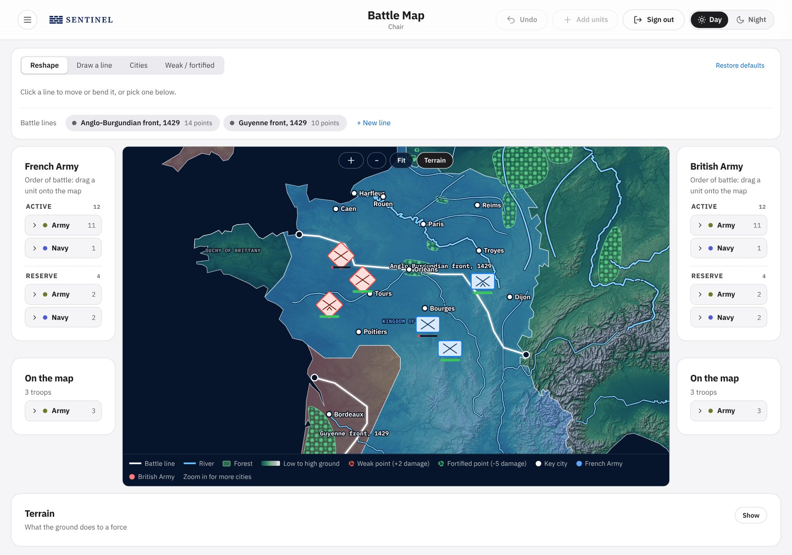
- Pick a unitIn a side’s column, find the unit under its class. Each row shows its symbol, name, front · ATK · HP · MOV.
- Put it downDrag the row onto the map, or click the row, then click the map. The column header reads “Click the map to put down Infantry 2. Esc to stop.”
- Move it laterDrag a marker on the map to a new place. The change saves automatically and every screen shows it.
- Stop placingPress Esc. Clicking a marker also cancels placing.
Symbols
Each marker uses a military symbol for the unit’s sub class (infantry, cavalry, ship, aircraft…) in the side’s colour: blue for the first side, red for the second, grey-slate for neutral.
Limits
A topic can hold 200 troops on the map. Destroyed units are not offered for placing, and a unit that is already on the map leaves your column and appears under On the map.
On the map
Beneath each side’s unit list, On the map lists that side’s placed troops with a mini HP bar and HP/Full HP. Press a row to select it, and if it is out of sight the map pans to bring it into view.
A troop on the map
Click a marker to see its stats, how far it can go this turn, and what you can do with it.
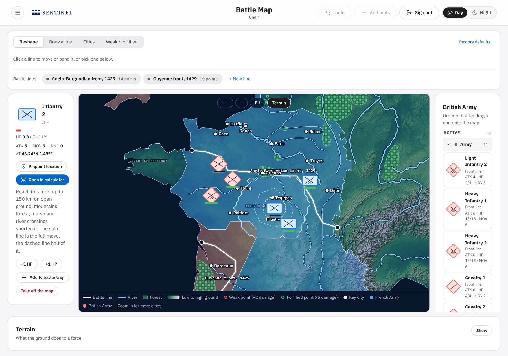
123456| Control | What it does | |
|---|---|---|
| 1 | Troop card | Symbol, name, HP, ATK, MOV, RNG and where it stands (latitude and longitude). |
| 2 | Pinpoint location | Glides the map to the troop and pulses a ring on it three times. |
| 3 | Open in calculator | Adds the unit to the calculator and switches page, in one click. |
| 4 | Reach | Solid outline: the full move this turn. Dashed: half of it. |
| 5 | −1 HP / +1 HP | For units not owned by a delegate. For a delegate’s unit SENTINEL says “That unit belongs to …: they change its HP.” Also Add to battle tray. |
| 6 | Take off the map | Removes the marker for everyone. The unit stays in the order of battle. |
How far can it move?
A troop’s marker also decides whether weak or fortified ground applies to it (page 36). Select a troop with MOV above 0 and the map draws its reach for this turn. One point of MOV is 30 km on open ground, so a unit with MOV 5 reaches 150 km. The solid line is the full move and the dashed line half of it.
- Land units: mountains, forest, marsh and river crossings shorten the reach (page 31).
- Ships: water only.
- Aircraft: ignore terrain.
Terrain and what it does
The map shows where the ground is hard. You rule on how much it matters.
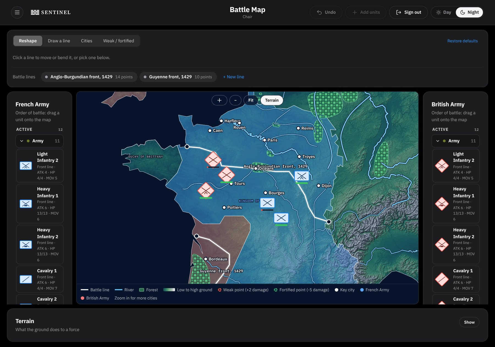
Press Show on the Terrain card under the map to see the suggested effects. They are guidance for your rulings, not automatic: “Suggested values: put them in the Situational multiplier of the Combat Calculator. The chairs rule on any crossing.”
| Terrain | Movement | In a fight |
|---|---|---|
| Major river | Crossed only at a bridge or ford; the move ends on the far bank. | Attacking across it ×0.75, defending the bank ×1.25. |
| Minor river | Crossing costs half the move. | Attacking across it ×0.9. |
| Mountains | Move ×0.5. Heavy guns and wagons keep to the passes. | Defender ×1.3. Archers and rifles on the heights reach further. |
| Thick forest | Move ×0.6. Cavalry and guns keep to the roads. | Defender ×1.2, ranged and cavalry ×0.75. |
| Marsh and flood plain | Move ×0.4. Cavalry and guns cannot enter off the roads. | Attacker ×0.8. |
Reach is automatic
The movement column is built into each troop’s reach shape (page 30). Mountains, forest and marsh shorten it; a major river blocks it except at a crossing.
Fighting is yours to rule
The “in a fight” numbers are not applied automatically. Choose the matching Situational multiplier chip (×0.75, ×1.25…) in the calculator (page 39).
Reshaping a battle line
Battle lines show where the armies face each other. Move and bend them as the war moves.
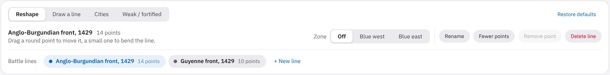
1234- 1Reshape is the active tool.
- 2Battle lines. Press a line’s name to choose it.
- 3Zone. Tint one side of the line (see below).
- 4Rename · Fewer points · Remove point · Delete line.
- Choose a linePress the line on the map, or its name under Battle lines. The bar shows its name and its point count, for example 14 points.
- Move a pointDrag a round point to a new place. Drag a small point to bend the line there.
- Remove a pointClick a round point to choose it, then Remove point, or double-click the point. A line needs at least two points, so the button greys out at two.
- Tidy itFewer points simplifies the line (for example “14 points down to 9”). Rename changes its label (up to 40 characters).
- Delete itDelete line asks first: “Delete the line? ‘…’ goes for everyone.” It does.
The zone
The zone tints one side of a line in the sides’ colours so everyone can see which ground each army holds.
| Line type | Choices | Effect |
|---|---|---|
| Open line (a front) | Off · Blue west · Blue east | Tints the ground on each side of the line: blue on one side, red on the other. |
| Closed line (it returns to where it began) | Off · Blue inside · Red inside | Tints the area inside, such as a landing zone or a besieged city. |
Drawing and restoring lines
Add a new line, from one end to the other, in a few clicks.
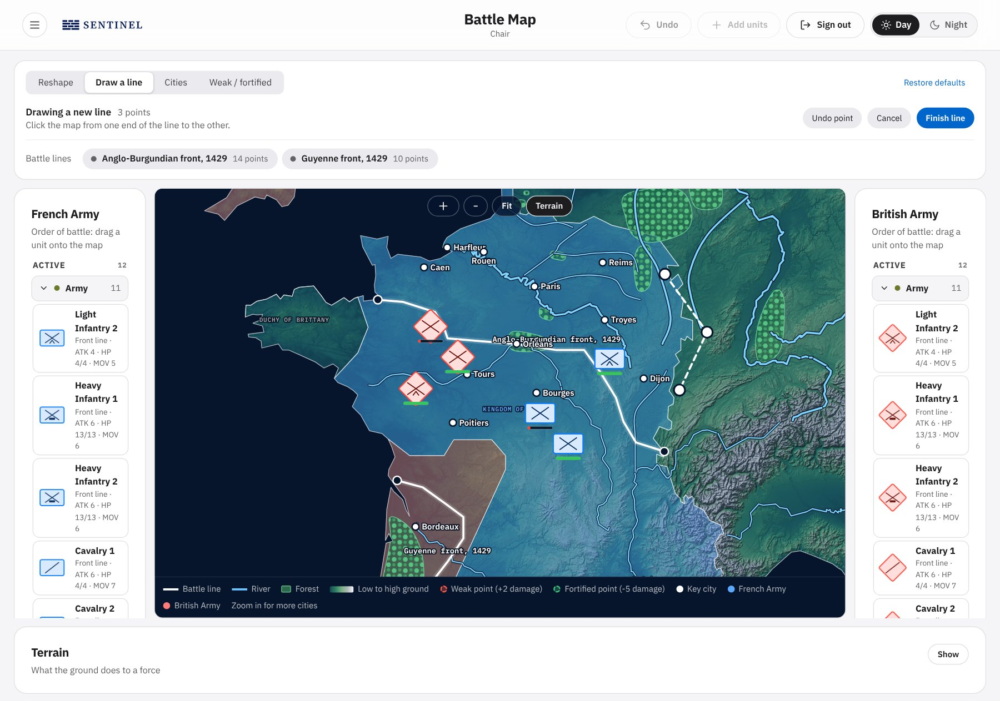
123- Choose Draw a lineIn the chair bar press Draw a line. The bar explains: “Click the map to lay down the points of a new line, from one end to the other.”
- Click the mapEach click adds a point (1, 2, 3 on the figure). The bar counts them. Undo point removes the last; Cancel discards the draft.
- FinishPress Finish line (it needs two points or more). SENTINEL asks you to name it. The line is added and chosen, and the tool returns to Reshape.
Limits
12 lines per map. 120 points per line. SENTINEL tells you when you reach either.
Closing a loop
End a line where it began and it becomes an area: its zone can then colour the inside.
Restore defaults
Press Restore defaults at the top right of the chair bar, level with the tools, to go back to the topic’s starting lines. SENTINEL asks first: “Restore the starting lines? Lines you drew on this map are lost.” Choose Restore to confirm.
| Topic | Starting lines |
|---|---|
| Topic 1 · The Hundred Years’ War | Anglo-Burgundian front, 1429 and Guyenne front, 1429. |
| Topic 2 · The First World War | None. The map starts empty and you draw the fronts. |
Cities, and keeping the map in sync
Give cities to the side that holds them. Then understand how the map saves and what to do if it does not.
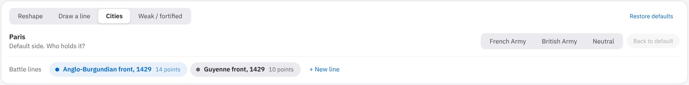
1234- Choose CitiesPress Cities in the chair bar. It says “Click any city on the map, then give it to a side.”
- Click a cityThe bar shows its name and whether it was Given to a side by the chairs or is the Default.
- Pick a sidePress the first side, the second side or Neutral. The city’s dot takes that colour for everyone.
- Undo a changeBack to default returns the city to its starting side.
Only the larger cities show when the map is zoomed out. Zoom in to reach smaller ones.
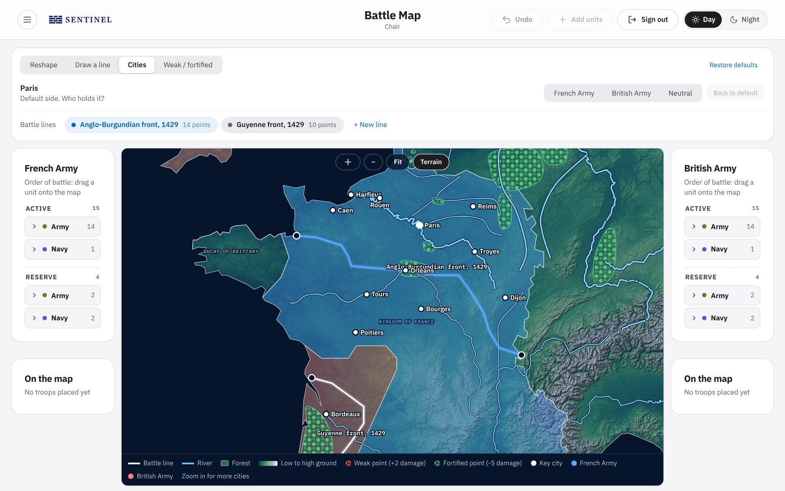
How the map saves
- Lines and cities save the moment you finish an edit.
- Troops save automatically. If a delegate changed a unit’s HP at the same moment, SENTINEL merges your move with their change instead of overwriting it. Where you both changed the same field, yours wins.
- If a save fails you see “Could not save the lines, try again”, “Could not save the city, try again” or “Could not save the troops, try again”, and the map reloads from the server.
Weak and fortified points
Mark ground where troops are exposed or dug in. A marker standing inside the ring takes extra or less damage in every battle you work out.
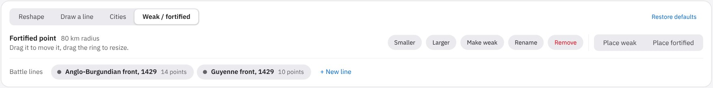
1234- 1Weak / fortified is the active tool.
- 2The chosen point: its kind, name and radius. “Drag it to move it, drag the ring to resize.”
- 3Smaller · Larger · Make weak (or Make fortified) · Rename · Remove. Smaller and Larger change the radius by 10 km a press.
- 4Place weak · Place fortified. Pick a kind, then click the map.
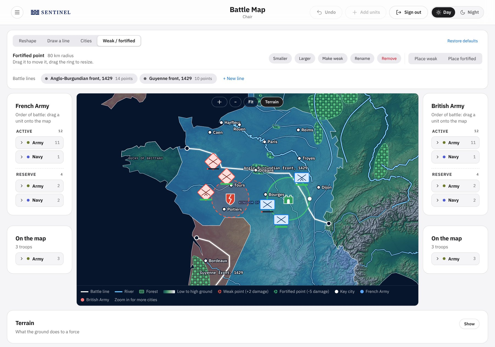
- Choose the toolPress Weak / fortified in the chair bar. It says what to do next.
- Pick a kindPress Place weak or Place fortified, then click the map where the point should sit. A new point starts at a 50 km radius and is chosen straight away.
- Size and move itDrag the point to move it, or drag the ring to resize. Smaller and Larger nudge it by 10 km. The radius runs from 5 to 1000 km.
- Name it, flip it, or remove itRename takes up to 40 characters. Make weak or Make fortified changes the kind and keeps the ring. Remove deletes the point for everyone.
Limits
60 points per map. At the limit SENTINEL says “Sixty points is the most a map can hold”.
Who sees them
Chairs and admins edit. Delegates see the points on their own map but cannot change them.
What the points do in a battle
Weak ground adds 2 damage to a unit that was hit. Fortified ground takes 5 off. Here is exactly when, and the working.
The rule
| Where the unit’s marker stands | Change to HP lost |
|---|---|
| Inside a weak point | +2 |
| Inside a fortified point | −5 |
| Inside both rings | +2 − 5 = −3 |
| Inside neither | none |
- Only damaged units. A unit that lost no HP in that step is left alone, so a point can never heal anyone.
- The unit must be on the map. The test uses the marker’s position. A unit that is not placed gets no effect.
- Both sides. It applies to the defenders’ damage and to the attackers’ damage from the counter-attack.
- Clamped. The final loss never goes below 0 and never above the unit’s HP before the step.
- It is automatic. Unlike terrain (page 31), you do not pick anything. The calculator’s working shows it (page 41).
Worked example
A defender with HP 13 is hit for 6.5 damage in the spread. Loss before any point is 6.5.
| Where the unit stands | Working | HP lost | HP after |
|---|---|---|---|
| No point | 6.5 | 6.5 | 6.5 |
| Fortified only | 6.5 − 5 = 1.5 | 1.5 | 13 − 1.5 = 11.5 |
| Weak only | 6.5 + 2 = 8.5 | 8.5 | 13 − 8.5 = 4.5 |
| Weak and fortified | 6.5 + 2 − 5 = 3.5 | 3.5 | 13 − 3.5 = 9.5 |
A 7-HP unit in the same weak point: 6.5 + 2 = 8.5, clamped to its 7 HP. It is destroyed.
In the working, the Spread over the defenders step shows each unit as name: HP → HP followed by (weak point: +2 damage) or (fortified point: −5 damage).
The Combat Calculator
Work out a fight before you rule on it. Nothing changes until you press Apply.
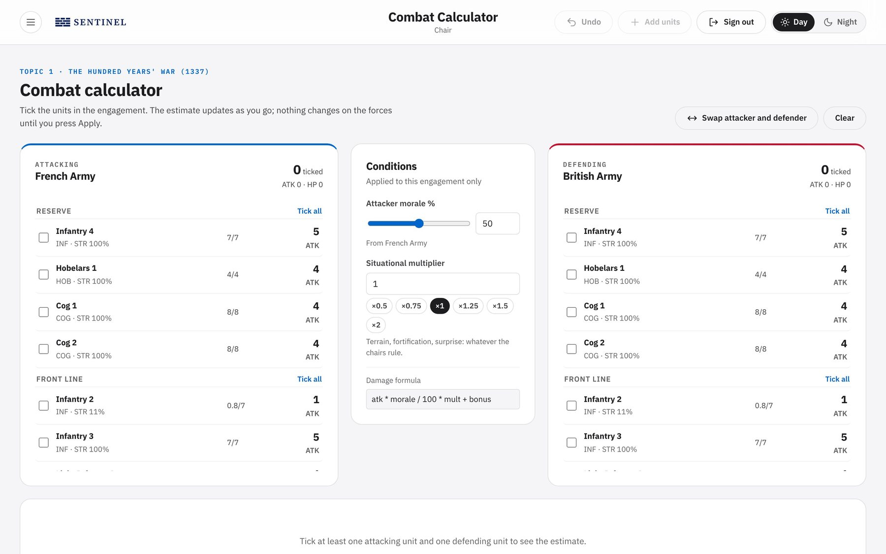
page 38
page 39
page 40
page 42
The page at a glance
| Area | What it holds |
|---|---|
| Attacking (left) and Defending (right) | A list per side, grouped by front (Reserve, Front line), with a tick box beside every unit still alive. |
| Conditions (middle) | Morale for this engagement, a situational multiplier, a flat bonus when it is switched on, and an artillery option. |
| Estimate (below) | Damage, how many units are destroyed on each side, donuts, a table per unit and the working. |
| Battle record (bottom) | Every battle you have applied, newest first. |
| Swap and Clear (top right) | Swap the roles of attacker and defender, or untick everything. |
Rules in use
The Rules in use chips show which steps are on, such as Morale: ON or Counter-attack: OFF. Press one to switch it; it is the same switch as on the Rules page (page 43).
Everything is reversible
Undo reverses an applied battle. The estimate itself never touches anyone’s forces.
Choosing the units
Tick who is attacking and who is defending. The attackers are the first side until you swap.
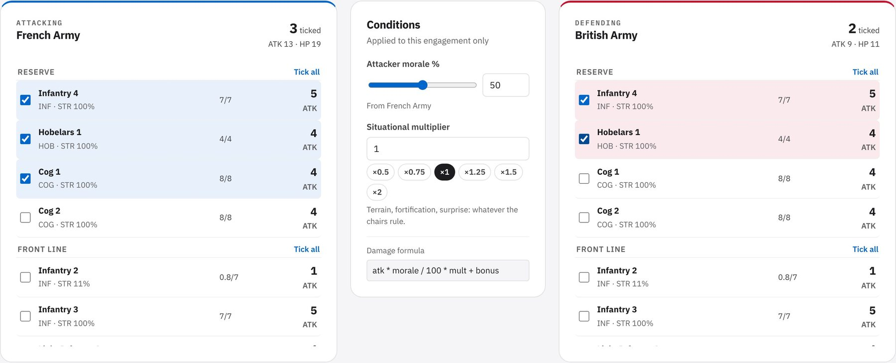
1234- 1Role and side. Attacking or Defending, with the side’s name.
- 2Ticked count. How many are ticked, and their combined ATK and HP.
- 3Tick all. Ticks every unit in that group. It becomes Untick all.
- 4A unit row. Name, code, strength, HP, and effective ATK.
- Tick the attackersIn the left list, tick each attacking unit, or press Tick all beside a group such as Front line.
- Tick the defendersDo the same in the right list.
- Swap if neededIf the other side is the one attacking, press Swap attacker and defender. Ticks, morale overrides and the labels move with it.
- Start againClear unticks everyone.
What each row shows
Each row shows the unit’s name, its code and STR (strength %), a small HP bar with HP/Full HP, and its effective ATK: the number the calculator will actually use. Destroyed units are not listed.
Conditions for this engagement
Adjust what applies to this fight only. None of it changes a side’s real morale or the rules.
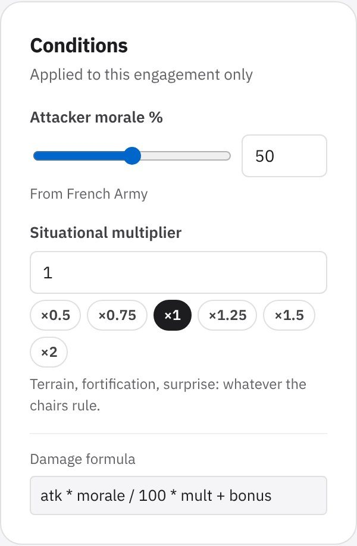
| Control | Use |
|---|---|
| Attacker morale % | A slider and number box, from 0 to 100, starting at the attacking side’s morale. The line below says From French Army. Move it and a link appears: Use French Army morale (50%). Press it to go back. |
| Defender morale % | Only shown when Counter-attack is on. It scales the defenders’ strike back. |
| Situational multiplier | Type a number, or press a chip: ×0.5, ×0.75, ×1, ×1.25, ×1.5, ×2. Use it for terrain, fortification or surprise. ×1 means no effect. |
| Flat bonus damage | Appears when Flat bonus damage is switched on in the rules. Added after the formula. |
| Artillery | Appears when artillery is in the fight (see below). |
| Damage formula | The formula in use, for reference. Change it on the Rules page. |
Choosing a multiplier
The terrain card (page 31) suggests values: attacking across a major river ×0.75, defending a river bank ×1.25, defending mountains ×1.3. These are not applied automatically. Pick the chip that matches your ruling. Terrain, fortification, surprise: “whatever the chairs rule”.
Artillery
When a unit with the code ART is in the fight, an Artillery in this engagement choice appears:
Takes damage
Artillery is hurt like any other unit. This is the default.
Only hits
Artillery deals its damage but takes none: not from a counter-attack, not from a results-chart loss, not when it is the target.
Reading the result
Once each side has a ticked unit, the estimate appears at once and updates with every change.
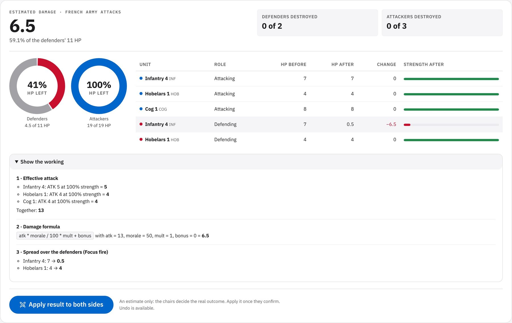
1234- 1Estimated damage. The headline: 6.5, which is 59.1% of the defenders’ 11 HP.
- 2Destroyed counts. Defenders and attackers destroyed, out of those ticked.
- 3Donuts. HP left on each side: defenders 41%, attackers 100%.
- 4Per-unit table. HP before, HP after, change and a strength bar.
The headline
| Item | Meaning |
|---|---|
| Estimated damage · French Army attacks | Damage dealt to the defenders after every step of the rules, in HP. |
| % of the defenders’ HP | That damage as a share of all the defenders’ HP together. |
| Results chart: … | Shown when the chart is on: the row of the results chart that applied. |
| Counter-attack | Damage the defenders strike back with, when Counter-attack is on. |
| Overkill | Damage left over once every defender is destroyed. |
The table
Each unit has a row: Role (Attacking or Defending), HP before, HP after, Change in red when it lost HP, and a Strength after bar. A unit taken to 0 shows a red Destroyed pill. Artillery set to Only hits shows an Only hits pill.
Show the working
Every number can be traced. Open the working when a delegate asks why a unit died.
Press Show the working under the table: each step, with the actual numbers.
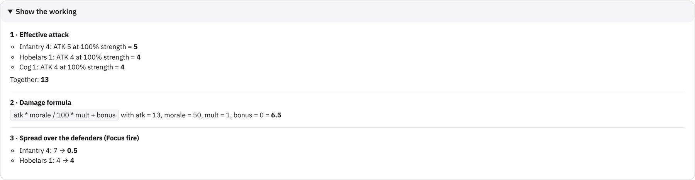
Reading it, step by step
- Effective attackEach attacker’s ATK, adjusted. Here Infantry 4: ATK 5 at 100% strength = 5. The three attackers add up to 13.
- Damage formula
atk * morale / 100 * mult + bonuswith atk = 13, morale = 50, mult = 1, bonus = 0 gives 6.5. - Spread over the defendersFocus fire: the first defender took all 6.5 (7 → 0.5); the second was untouched (4 → 4).
The same fight with more rules on
Switch on the Combat modifier, the Results chart and Counter-attack, and add a +1 French directive, and the working grows to show each one:
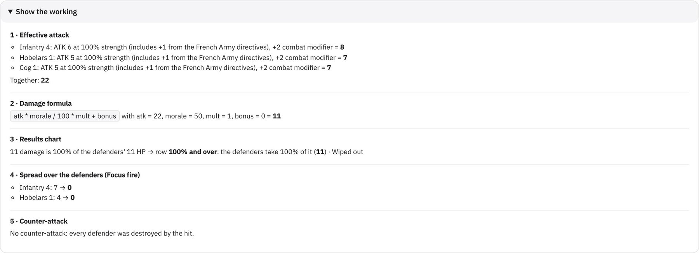
- Effective attack now reads ATK 6 … (includes +1 from the French Army directives), +2 combat modifier = 8.
- Results chart: 11 damage is 100% of the defenders’ 11 HP → row 100% and over → Wiped out.
- Counter-attack: “No counter-attack: every defender was destroyed by the hit.” A defender at 0 HP cannot strike back; one with 1 HP left does, at full strength.
Applying the result
When you have ruled, one button writes the outcome to both sides.
Press Apply result to both sides. SENTINEL works the engagement out again on the live units and then:
- sets each unit’s HP to its new value, in both armies;
- moves units at 0 HP to Destroyed (unless that rule is off);
- adds a line to the activity log and a point to the strength charts;
- adds the engagement to the Battle record;
- unticks any unit that was destroyed;
- updates the HP shown on those units’ markers on the Battle Map.
A short message confirms: “Battle result applied to both sides”.
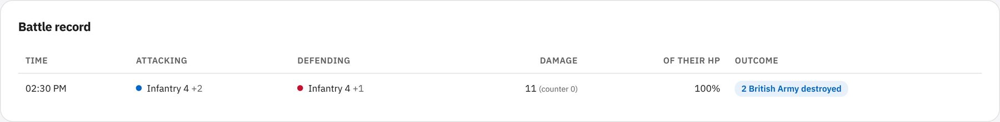
| Column | Reading |
|---|---|
| Time | When you applied it. |
| Attacking · Defending | The first unit’s name and +N for others. A dot gives the side’s colour. |
| Damage | Damage dealt, and (counter N) if there was a counter-attack. |
| Of their HP | Damage as a share of the defenders’ HP. |
| Outcome | A pill per side that lost units, such as 2 British Army destroyed, or No units lost. |
Rules & Formulas
How damage is worked out, as a short pipeline of steps you can switch on and off.
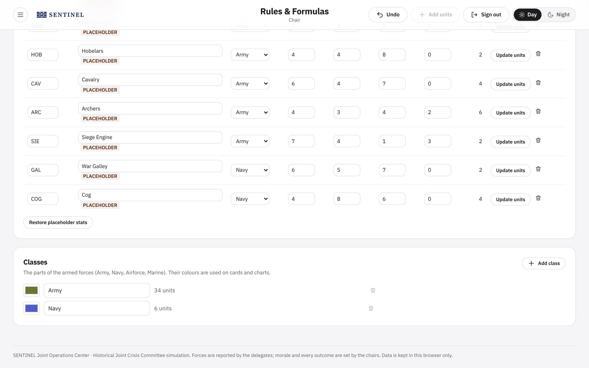
The page opens with Current method, a sentence that restates the rules as they stand, so a committee can read it aloud: “Each unit attacks with its ATK, lowered when it is weakened… The attacking units’ attack is added up and put through atk * morale / 100 * mult + bonus… The damage is spread in the order you tick the defenders… Units at 0 HP move to Destroyed.”
| Step | Switch | What it does | Default |
|---|---|---|---|
| 1 · Unit attack | Always on | Each unit starts from the ATK on its card. | — |
| 2 · Strength penalty | Weakened units attack with less. | On | |
| 3 · Combat modifier | Adds or subtracts ATK by strength tier. | Off | |
| 4 · Damage formula | — | Turns total attack into damage. | Attack × Morale |
| 5 · Results chart | Looks the damage up as a % of defenders’ HP. | Off | |
| 6 · Spread and finish | — | How damage is shared; what happens at 0 HP. | Focus fire |
The other switches live inside those steps: Morale, Situational multiplier and Flat bonus damage in step 4, and Counter-attack and Move units at 0 HP to Destroyed in step 6. By default Morale, Multiplier and Move-to-Destroyed are on; Bonus and Counter-attack are off.
Strength penalty, modifier and results chart
Three tables that decide how a damaged unit fights and how the result is read.
2 · Strength penalty
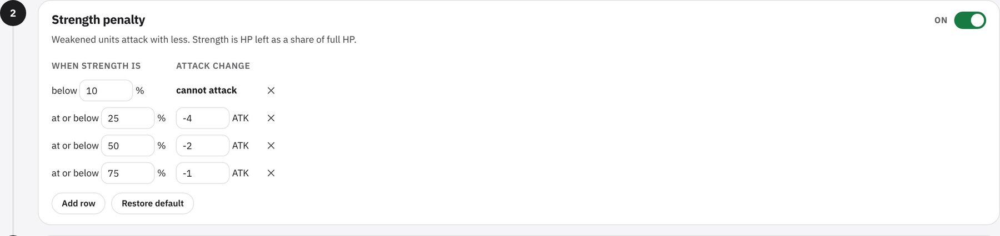
Strength is HP left as a share of full HP. The rows are checked from the lowest threshold up and the first match applies. A cannot attack row (below 10%) removes the unit’s attack altogether. Press Add row or Add a “cannot attack” row, ✕ to remove one, or Restore default.
3 · Combat modifier
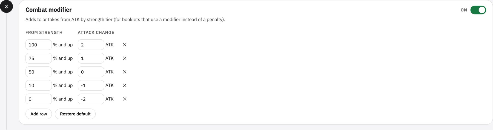
For booklets that use a modifier by tier instead of a penalty. A unit at 100% gains +2 ATK; one under 10% loses 2. Normally you use either the penalty or the modifier; if both are on, both apply.
5 · Results chart
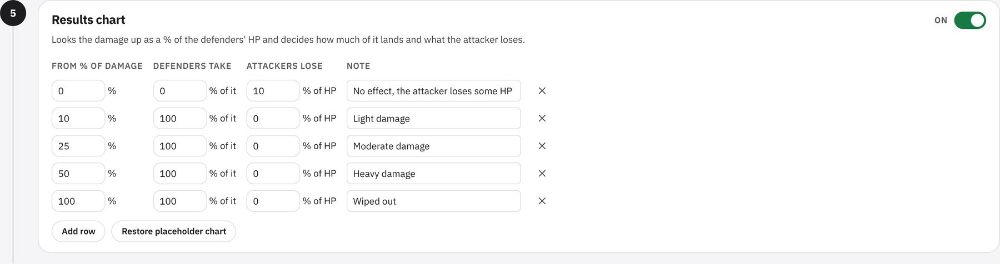
Takes the damage as a percentage of the defenders’ HP, finds the row with the highest From % that fits, and applies it: the defenders take N% of the damage, and each attacker loses N% of its HP. Example: 11 damage against 11 HP is 100%, so the row 100% and over applies (Wiped out). A hit under 10% falls on the first row: no effect, and the attacker loses 10% of its HP.
The damage formula
A small, safe formula language. Pick a preset, or write your own.
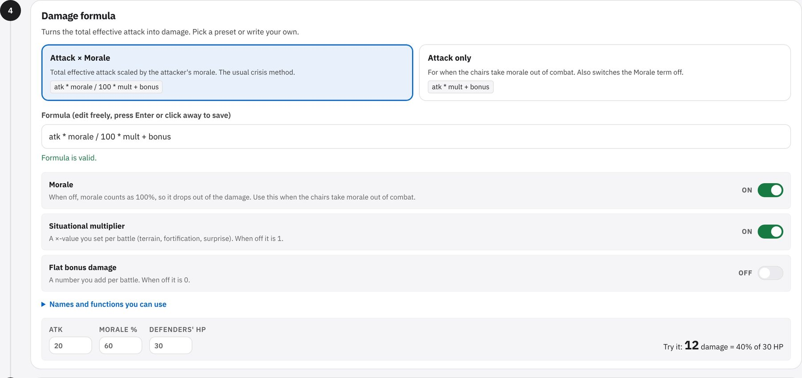
Presets: Attack × Morale (atk * morale / 100 * mult + bonus, the usual crisis method) and Attack only (atk * mult + bonus, for when the chairs take morale out of combat; it also switches the Morale term off).
Edit the formula freely. Press Enter or click away to save. The message below the box reads Formula is valid. or, for a mistake, Problem: Expected “)”. The standard formula is used until this is fixed.
Names you can use
| Name | Value |
|---|---|
atk | Effective attack of the attacking units, together |
base | Their attack before the strength rules |
morale | Attacker morale % (100 when Morale is off) |
mult · bonus | Situational multiplier (1 when off) · flat bonus (0 when off) |
hp · maxhp | Defenders’ current and full HP, together |
n · m | Number of attacking · defending units |
datk · str | Defenders’ effective attack · attackers’ average strength % |
Operators: + − * / % ^ and comparisons > < >= <= == != (true counts as 1). Functions: min max round floor ceil abs sqrt pow clamp(x, lo, hi) if(test, a, b). Dividing by 0 gives 0.
Ideas to start from
| Idea | Formula |
|---|---|
| Defenders hit back through their own attack | max(0, atk - datk / 2) * morale / 100 |
| 20% less when the attackers are outnumbered | atk * morale / 100 * mult * if(n < m, 0.8, 1) |
Spread, directives, sub classes and classes
The finishing touches: how damage is shared, standing orders per side, and the stats behind every unit type.
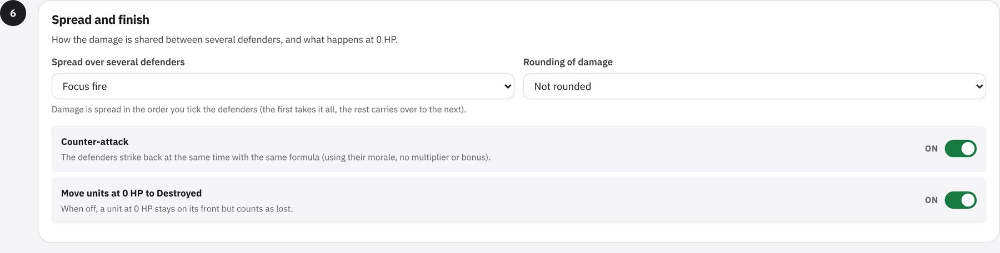
Spread: Focus fire (default) lets the first ticked defender take all it can, then the next; Even split shares it equally, leftovers moving on; Proportional shares it in proportion to each defender’s HP. Rounding can be none (default), nearest, always down or always up.
Counter-attack makes every defender still standing after the hit strike back at full strength with the same formula (using its morale, no multiplier or bonus). Move units at 0 HP to Destroyed keeps the board tidy; when off, a unit at 0 HP stays where it is but counts as lost.
Directives by side
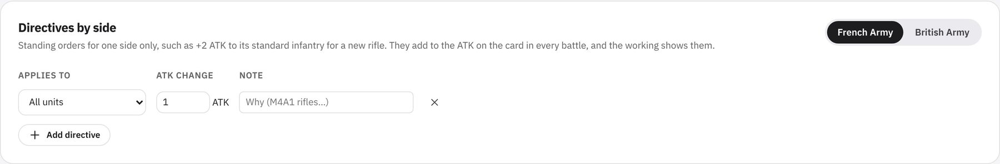
Standing orders for one side only: +2 ATK to its standard infantry for a new rifle. Choose the side at the top, press Add directive, pick who it applies to (all units, a whole class, or one sub class), the ATK change and a note. Directives add to the ATK on the card in every battle, and the working shows them.
Sub classes and classes
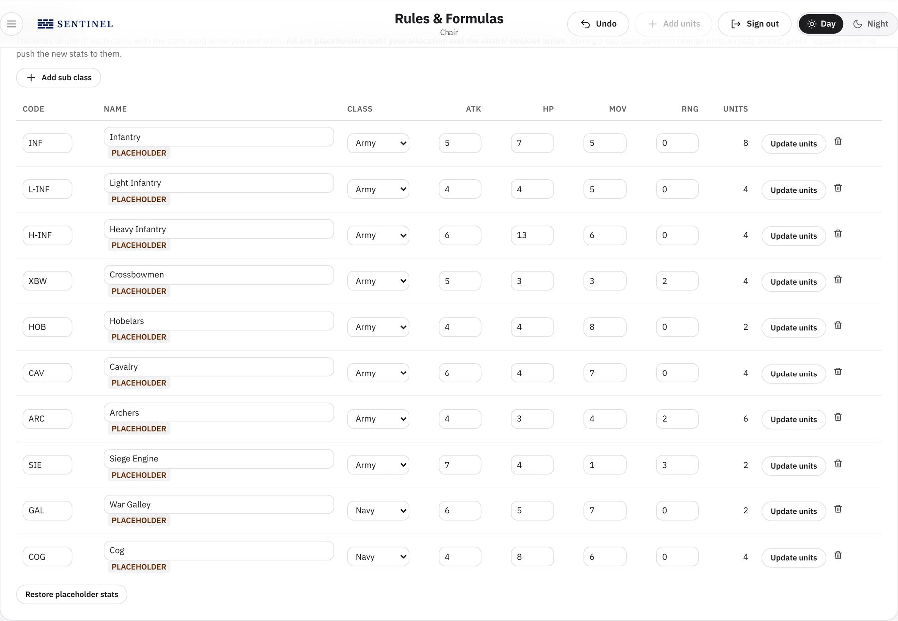
Each sub class has a code (up to 8 characters), a name, a class, and ATK, HP, MOV, RNG. Rows from the starting set are tagged PLACEHOLDER until your booklet’s values replace them. Add sub class creates one; Update units pushes new stats to units of that type held on this device, keeping each unit’s share of HP; Restore placeholder stats undoes your edits. Delegates enter their own units with their own stats; a change here affects only your device. Classes (Army, Navy, Airforce, Marine) can be renamed and recoloured, and removed only when no unit uses them.
Sides by day
In a crisis, loyalties move. Here you pull each character onto a side, one day at a time.
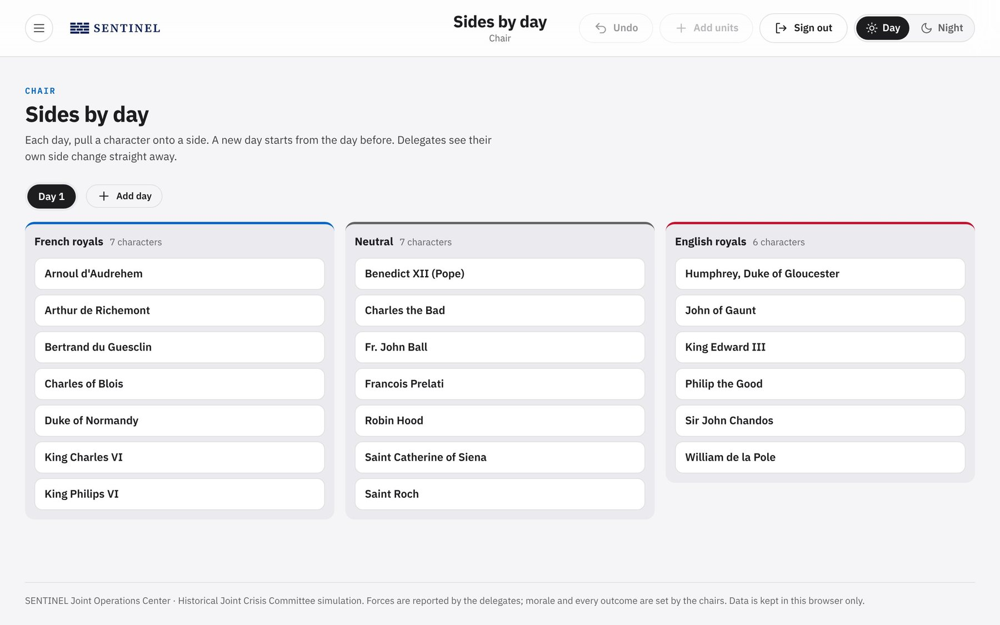
1234- 1Day. One chip per day. The last day is the current one.
- 2Add day. Start the next day from the day before.
- 3Side columns. French royals, Neutral, English royals (Topic 2: Allied powers, Neutral, Central powers).
- 4Characters. Each chip is a character, with the delegate’s username under it when one is assigned.
- Pick the topic and dayYou work in the topic you chose. Press a Day chip to look at that day.
- Move a characterDrag a chip to another column, or click the chip (it highlights) and press Move here on the column you want.
- DoneSaved at once. The delegate holding that character sees their side change straight away.
Day 1 starts from the allocation sheet
The first day begins with every character on the side their faction belongs to. Add day copies the day before.
Remove last day
Remove last day appears once there are two days or more. It deletes the latest day and its moves, so use it only to undo a day you added by mistake.
Running a day
A short routine for each day of the committee, and who starts where.
- Open the dayAt the start of the committee day, press Add day if the committee has moved on. Everyone begins on the side they held yesterday.
- Hear the crisisAs directives and crisis notes arrive, decide who defects, is captured, or changes loyalty.
- Move the charactersDrag them to their new column. Announce each move aloud: delegates see their own side change on screen, but the room needs to hear why.
- Check the boardOpen Order of Battle. Moved characters’ units shift to their new side or to Neutral parties.
- Close the dayWhen the day ends, leave it as is. The next Add day copies it.
Who starts where
| Topic 1 · The Hundred Years’ War | Topic 2 · The First World War | |
|---|---|---|
| First side 7 characters | French royals. Arnoul d’Audrehem, Arthur de Richemont, Bertrand du Guesclin, Charles of Blois, Duke of Normandy, King Charles VI, King Philips VI. | Allied powers. Raymond Poincaré, Nicholas II, George V, Joffre, Asquith, Goremykin, Jellicoe. |
| Second side 6–7 characters | English royals. Humphrey of Gloucester, John of Gaunt, King Edward III, Philip the Good, Sir John Chandos, William de la Pole. | Central powers. Kaiser Wilhelm II, Franz Joseph I, Enver Pasha, Hindenburg, Tisza, Atatürk, Tirpitz. |
| Neutral 6–7 characters | Pope Benedict XII, Charles the Bad, Fr. John Ball, François Prelati, Robin Hood, St Catherine of Siena, St Roch. | Woodrow Wilson, Queen Wilhelmina, King Gustav V, King Alfonso XIII, Kamio Mitsuomi, Moranville. |
Opening a session
Ten minutes before the room fills: the setup that saves you from fixing things live.
- Sign in and pick the topicUse your own chair account and choose the topic you are running (page 9, page 11). Check the header names you as Chair.
- Check who is on which sideOpen Sides by Day. If the committee has moved on a day, press Add day (page 48). Neutral characters have no force until you move them.
- Set moraleGive each side its starting figure on Morale (page 25). Delegates see only their own side’s number.
- Read the rules outOpen Rules & Formulas. Check the switches and the formula against what you told the room, then read Current method aloud (page 43). Rules are shared, so agree with your co-chair who edits them (page 55).
- Look at the boardOpen Order of Battle. If a delegation is missing, they have not added units yet, or their character is Neutral today (page 22).
- Set up the mapPlace troops where the committee says they stand (page 29), check the battle lines (page 32) and mark any weak or fortified ground (page 35).
- Do one dry runTick two units in the calculator and look at the working without pressing Apply (page 41). If the damage surprises you, fix the rules now.
| Before the room fills | Done? |
|---|---|
| Signed in as a chair, right topic | ☐ |
| Today’s day added in Sides by Day | ☐ |
| Both sides’ morale set | ☐ |
| Rules read through, one editor agreed | ☐ |
| Troops placed, lines and points checked | ☐ |
| Dry-run battle gave a sensible number | ☐ |
Ruling a battle from start to finish
From “we attack at dawn” to everyone’s HP updated, in the order that avoids mistakes.
- Hear the attackLet the delegate say who attacks whom and from where. Check both stacks are on the map if ground matters.
- Set up the engagementDrag units into the tray (page 24), or tick them in the calculator (page 38). Tick defenders in the order the damage should fall: Focus fire hits the first one first.
- Rule the conditionsChoose the Situational multiplier for terrain, surprise or supply (page 39). Terrain suggestions are guidance only (page 31). Weak and fortified points apply by themselves.
- Read the resultLook at damage, units destroyed and HP before and after (page 40). Open the working and read the key steps aloud if anyone doubts it (page 41).
- Apply itPress Apply result to both sides (page 42). HP, Destroyed units, the log, the charts, the battle record and the map markers all update. A mistake? Press Undo or Ctrl Z straight away.
- Tell the delegatesDelegates keep their own records, so say the outcome out loud: who lost how much, who was destroyed.
- Move the troopsIf the committee rules a retreat or advance, drag the markers on the map (page 30).
Fast path
Tray → Open calculator → check conditions → Apply. Four moves for a routine fight.
Careful path
Calculator → open Show the working → rule the conditions → read it aloud → Apply. Use it for decisive battles.
Defections, captures and new loyalties
A character changes side mid-session. Do it in this order and nothing is left pointing at the wrong army.
- Rule the changeAgree it with your co-chair and announce it. The room should hear why, because the screens only show the result.
- Move the characterIn Sides by Day, drag the character to the new column or to Neutral (page 47). Their units shift on the board, and the delegate’s morale card changes to the new side’s figure.
- Check their troops on the mapPlaced markers stay where they are. Decide whether they stay, retreat or are taken off the map, and check what colour they now show (page 30).
- Re-set morale if neededA defection usually moves both sides’ morale. Change it on the Morale page (page 26).
- Update the groundGive captured cities to the new holder (page 34) and redraw the front if it moved (page 32).
- Look at the board againOpen Order of Battle and check the units now sit where you expect (page 20).
Running a front on the map
A short routine for using lines, cities and ground together so the map tells the same story as the room.
- Draw the front onceUse Draw a line to lay down the front, then Reshape to fix it (page 33, page 32). Use the zone tint if you want each side’s ground visible at a glance.
- Keep cities honestWhenever a city changes hands, give it to the new side with the Cities tool (page 34).
- Mark special groundUse Weak / fortified for a ruined wall, an exposed flank, a fortress, a prepared position. Name each point so you remember why it is there (page 35).
- Check who stands whereSelect a troop to see its reach (page 30). A unit has to be placed, with its marker inside the ring, before a point affects it (page 36).
- Fight on itTray or calculator as usual. Weak and fortified effects show in the working under Spread over the defenders (page 41).
- Clean up at the endRemove points that no longer apply. Restore defaults resets lines only, so points stay until you remove them (page 33).
| Tool | Use it to | Page |
|---|---|---|
| Reshape | Move or bend a line, tint a zone, rename, delete | page 32 |
| Draw a line | Add a front or a perimeter (up to 12 lines) | page 33 |
| Cities | Say who holds a city | page 34 |
| Weak / fortified | Mark ground that adds 2 or takes 5 off damage (up to 60 points) | page 35 |
When something goes wrong live
The six things that actually happen mid-session, and the quickest fix for each.
| What you see | Quick fix | Page |
|---|---|---|
| Wrong battle applied | Press Undo or Ctrl Z at once, then rule it again. | page 42 |
| Damage looks too high or too low | Open the working and look at the formula, the multiplier and any weak or fortified note. A custom formula with an error falls back to Attack × Morale. | page 41, page 45 |
| A rule change did not stick | Someone saved first. Read the rules again and repeat your edit. | page 43 |
| Map is out of date | Switch page and back, or reload. Failed saves say “Could not save …, try again”. | page 34 |
| A delegate’s units are missing | They have not added them, the character is Neutral today, or the units are destroyed. | page 22 |
| A delegate cannot see morale | They see only their own side’s figure. On no side today means no figure. | page 25 |
| Signed out suddenly | Tokens last 12 hours and stop working if the password is reset. Sign in again. | page 10 |
Chair’s checklist
Tick these off before, during and after each session. Print this page for the table.
Before the session
- Sign in at Chair access and open both topics.
- Check every delegate has an account and a character.
- Open Sides by day and confirm Day 1.
- Set Morale for both sides (default 50%).
- Review Rules & Formulas against the booklet: strength table, chart, formula.
- Place any starting troops on the Battle Map.
- Choose Day or Night mode for the room.
- Agree which device holds the rules, and who edits the battle lines.
Each turn
- Read the Overview: strength, readiness, new losses.
- Rule on orders; update troops on the map.
- For each contact: tick units, set conditions, read the working.
- Apply only after you have ruled.
- Announce the outcome to the delegates concerned.
- Adjust Morale if events call for it, and say why.
End of day
- Add day on Sides by day.
- Move characters who changed side.
- Check Neutral parties on the board.
- Review the Battle record.
End of the session
- Note any rule changes made in the session.
- Press Sign out on shared computers.
- Remember: the activity log, battle record, strength charts and sub class stats stay in this browser. Rules, morale, sides and the map are on the server.
Where your data lives
Some things are shared through the server and others stay in your browser. Knowing which saves a lot of confusion.
| Stored | Seen by | |
|---|---|---|
| Delegates’ units (a copy for you) | Server | Chairs, read-only |
| Morale, per side and topic | Server | Chairs set it; delegates see their own side’s |
| Sides by day | Server | Chairs and administrators set it; delegates see their own |
| Troops on the map | Server | Everyone |
| Battle lines, city sides, weak and fortified points | Server | Everyone |
| Accounts, passwords, characters | Server (passwords stored hashed) | Administrator |
| Rules: formula, switches, strength and results tables, directives | Server (shared per topic) | Everyone; chairs and administrators edit |
| Sub class stats, activity log, battle record, strength history | This browser | You |
| Collapsed panels, side, Day / Night | This browser | You |
| Your sign-in | This browser tab, 12 hours | You |
What that means
- Switching device keeps your rules but starts a fresh log and charts. The shared things (rules, morale, sides, map) come with you. The activity log, battle record, strength history and sub class stats do not.
- Clearing site data or using a private window loses your log, battle record, strength history and sub class stats. Rules, morale, sides and map are safe on the server.
- The browser’s data is kept per sign-in: two chairs on one browser never see each other’s log or record.
- Two co-chairs share one set of rules. If you both edit at once, the second save is refused and you are told to check and repeat it. Agree who edits.
- If a delegate’s device is new and empty, it does not wipe the units you can see.
Passwords and sessions
Passwords are checked on the server and never stored in readable form. A sign-in token lasts 12 hours, lives in the browser tab, and stops working if the password is reset.
Who can see what you do
The administrator’s System status page lists who is online, with their topic and page, using a heartbeat sent every 45 seconds while a page is open.
Troubleshooting and questions
The things chairs ask most. Find the symptom, try the fix.
I can’t see any units.
Delegates haven’t added them yet, or their character is not on a side today. Check Neutral parties and Sides by day (page 22, page 47).
Add units and the HP buttons are greyed out.
That is by design. Delegates own their units. Rule through the calculator and Apply (page 42).
I can’t drag a card to the front line.
Only the owner can. You can drag a card into the battle tray (page 24).
A delegate says their morale looks wrong.
They only see their own side’s figure, refreshed every 15 seconds. If they are on no side today they see none.
The map isn’t updating.
Switch page and back, or reload. You will see “Could not save …, try again” if a save failed (page 34).
The strength chart is empty or short.
History lives in this browser. A new device or cleared site data starts a new chart (page 55).
My rule change vanished.
Someone saved a change to the same topic first, and SENTINEL kept theirs. Read the rules again and repeat your edit (page 43).
Weak or fortified ground did nothing.
The unit must be placed on the map with its marker inside the ring, and it must have lost HP in that step (page 36).
I applied a battle by mistake.
Press Undo or Ctrl Z straight away (page 42).
My formula doesn’t work.
Read the message under the formula box. Until it is fixed, the standard formula is used and the result panel warns you (page 45).
Delegates’ numbers differ from mine.
Rules are stored in each browser and are not pushed to delegates. Agree the numbers aloud and set your own rules to match the booklet (page 43).
I was signed out suddenly.
Sessions last 12 hours and end when your password is reset. Sign in again.
Two chairs edited the lines at once.
Lines are saved as a whole list, so the later save wins. Decide who edits lines (page 32).
Sign-in says I don’t have chair access.
Press the strip at the foot of the card until it reads Chair access (page 10).
Glossary and quick reference
The words SENTINEL uses, in one place.
- Active
- Units on a front, rather than in Reserve.
- ATK
- Attack. Effective ATK is after strength rules and directives.
- Battle line
- A line on the map showing where armies face each other.
- Battle tray
- The two boxes on the Order of Battle that set up an engagement.
- Chair
- You. Neutral, sets morale and outcomes.
- Character
- The historical figure a delegate plays.
- Class
- A branch of the forces: Army, Navy, Airforce, Marine.
- Counter-attack
- The defenders striking back in the same engagement.
- Delegate
- A participant who plays one character and records their forces.
- Directive
- A standing ATK bonus or penalty for one side.
- Focus fire
- Damage lands on defenders in the order ticked.
- Front
- A column of the Order of Battle. The committee has one: Front line.
- HP
- Hit points. Strength is HP as a share of full HP.
- Morale
- A side’s will to fight, 0–100. Scales attacker damage.
- MOV
- Movement. 1 MOV ≈ 30 km on open ground.
- Neutral
- On no side today. No force.
- Overkill
- Damage left over after every defender is destroyed.
- Readiness
- Units sorted by strength tier.
- Reserve
- Units raised but not deployed.
- RNG
- Range of a unit’s attack.
- Sub class
- A kind of unit in a class: Infantry, Cavalry…
- Weak point
- A ring on the map: a unit inside it that is hit takes 2 more damage.
- Fortified point
- A ring on the map: a unit inside it that is hit takes 5 less.
- Zone
- Tint on one side of a battle line.
Keys
| Keys | Action |
|---|---|
| Ctrl Z | Undo |
| Esc | Close pop-up, drawer, menu; stop placing a troop |
| Enter | Save a pop-up form or an edited formula |
Limits at a glance
| Item | Limit |
|---|---|
| Battle lines per map | 12 |
| Points per line | 120 |
| Weak and fortified points per map | 60 |
| Troops on a map | 200 |
| Battle record kept | 300 |
SENTINEL · Historical Joint Crisis Committee simulation tool · Fictional. Not affiliated with any real agency or company.
Cheat sheet
Every number, key and formula you are likely to need, on one page.
Numbers
| Move | 1 MOV ≈ 30 km (open ground) |
| Weak point | +2 HP lost, if hit |
| Fortified point | −5 HP lost, if hit |
| New point radius | 50 km (5–1000) |
| Morale | 0–100 |
| Morale and rules refresh | 15 s |
| Sign-in lasts | 12 hours |
| Heartbeat (admin view) | 45 s |
Limits
| Battle lines per map | 12 |
| Points per line | 120 |
| Weak / fortified points | 60 |
| Troops on the map | 200 |
| Battle record | 300 battles |
| Line or point name | 40 characters |
Default damage
atk × morale / 100 × mult + bonus
Strength penalty (default on): below 10% cannot attack; 10–25% −4 ATK; up to 50% −2; up to 75% −1.
Weak or fortified ground changes the HP lost by a damaged unit whose marker is inside the ring, never below 0 or above its HP before the step.
Keys
| Keys | Action |
|---|---|
| Ctrl Z | Undo |
| Esc | Close, or stop placing a troop |
| Enter | Save a pop-up form or a formula |
Find it fast
| I need to… | Page |
|---|---|
| Set up a session | page 49 |
| Rule a battle | page 50 |
| Change someone’s side | page 51 |
| Use the map | page 52 |
| Fix a live problem | page 53 |
| Look a word up | page 57 |